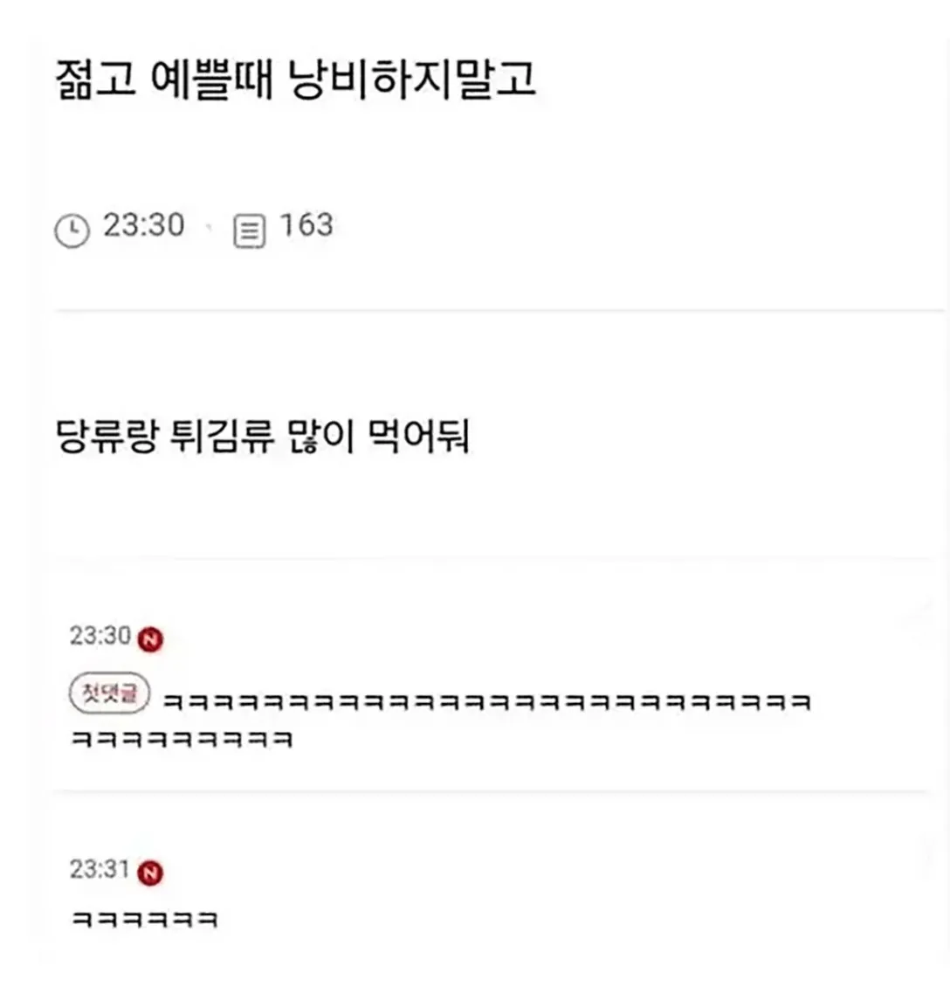

젊고 예쁠때 꼭 해야할것..jpg
댓글
맞음 그래서 나이들어서 못먹는 당류 튀김류를 젊을때부터 먹어둬야하는거임
그러면 평생 찔끔찔끔 먹는거야
몸이 짱짱할 때 어느정도 먹어줘야지
너무 많이 먹으면 젊기만 한 돼지 됨

ㅇㅈ
잇몸관리도 젊을때부터 해야됨
중고딩때 살찌면 평생 힘들어짐
그때부터 말라깽이 습관을 들여야 삶이 편함
맞음
젊어서 헬스해라
ㅇㄱㄹㅇ
다들
당화혈색소 검사 심심하면 받아봐....
직장인이면 공복혈당 검사 받을껀데
정상이라도, 내당능장애 일 확률 있음
있을때 잘 관리하자
명문이다
ㅇㅈ
젊고예쁠때는 갱뱅아니냐
젊고 예쁠 때 꼭 해야 할 것은 섹스지
맥주도 빼먹지마라..
짹쭈랑 ntr 야노플레이 등등
체질 안 맞거나 너무 많아 먹으면 요즘 많아진 조기성인병 행
저거 보고 많이 먹으면안돼
많이 먹고 돼지되거나 당뇨 온 애들 많이 봄
늙으면 많이도 못먹고 더 심하면 아예 못먹을수도 있음 ㅋㅋ
제로튀김 숨참는다
건강에 안좋은 음식과 결별하는 때는 시기가 없다
빠를수록 좋음
글쓴이도 젊을때 당류 튀김 많이 먹었던거 아님?
개소리임 췌장 한번 병신되면 돌아오기 힘듬 하지마라
적당히 먹고 시간 될 때마다 운동ㄱ
맞아 많이 먹어둬라 ㅠ
ㄴㄴ 살아있을 때 신나게 즐겨야함
근데 당류는 좀 무서움
어릴때 먹어두는게 아니라 어릴때부터 관리해야 되는데 보통 뚱뚱한 인간들은 같이 생활하면서 부모님 식습관 물려받는 경우가 많아서 부모님이 뚱뚱하면 같이 뚱뚱할 확률이 높음
쥰내 맞는말.
대신 20대 말부터는 관리해. 30대까지 식습관 유지되면 고문이다.
영포티 개붕이 분들은 젊을 때 놀거나 먹는건 아무 의미 없고
늙을 때만 생각하면서 젊을 때는 건강챙기고 공부만 해야 하는
그런 인생 살 것 처럼 얘기하시던데 ㅋㅋㅋㅋ
진짜 35넘으면 당은 바로 살로가고 짜장 곱배기 먹으면 더부룩하고 튀김먹으면 위산역류함
저러다 20대 당뇨온다..
ㄹㅇ임
그래도 절대 뱃살은 찌우지마라 진짜 나이들어서 빼려면 족됨..
젊을때부터 관리해야하는거 아님?